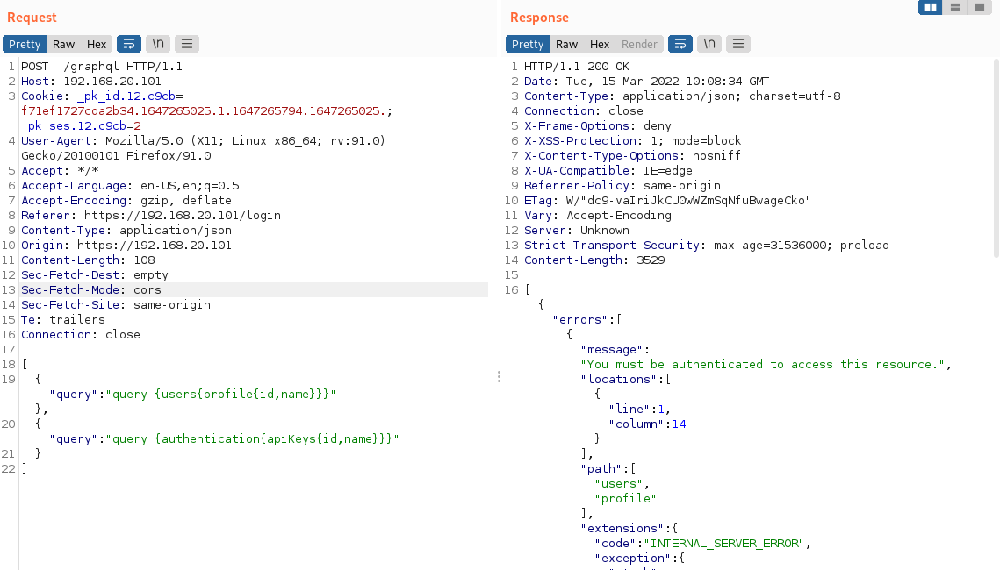

JSON list based batching
POST /graphql HTTP/1.1
Host: 192.168.20.101
Cookie: _pk_id.12.c9cb=f71ef1727cda2b34.1647265025.1.1647265794.1647265025.; _pk_ses.12.c9cb=2
User-Agent: Mozilla/5.0 (X11; Linux x86_64; rv:91.0) Gecko/20100101 Firefox/91.0
Accept: */*
Accept-Language: en-US,en;q=0.5
Accept-Encoding: gzip, deflate
Referer:
https://192.168.20.101/loginContent-Type: application/json
Origin:
https://192.168.20.101Content-Length: 108
Sec-Fetch-Dest: empty
Sec-Fetch-Mode: cors
Sec-Fetch-Site: same-origin
Te: trailers
Connection: close
[
{"query": "query {users{profile{id,name}}}"},
{"query": "query {authentication{apiKeys{id,name}}}"
}
]
Bibliography:
https://www.apollographql.com/blog/apollo-client/performance/batching-client-graphql-queries/